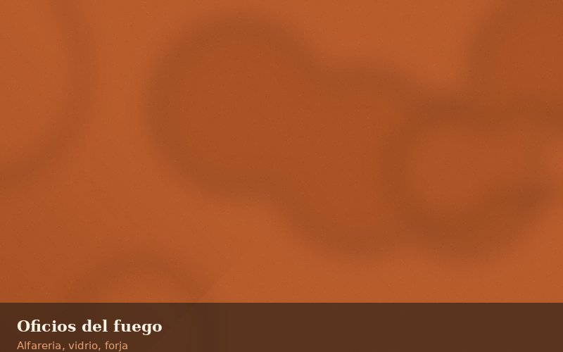
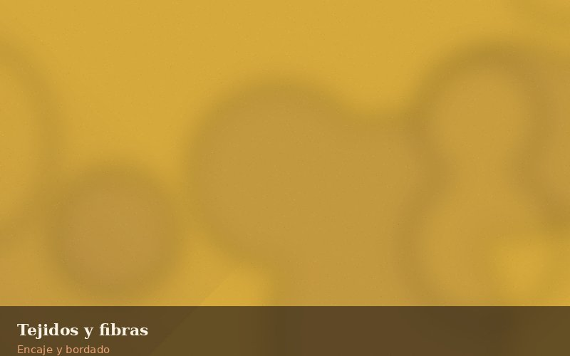
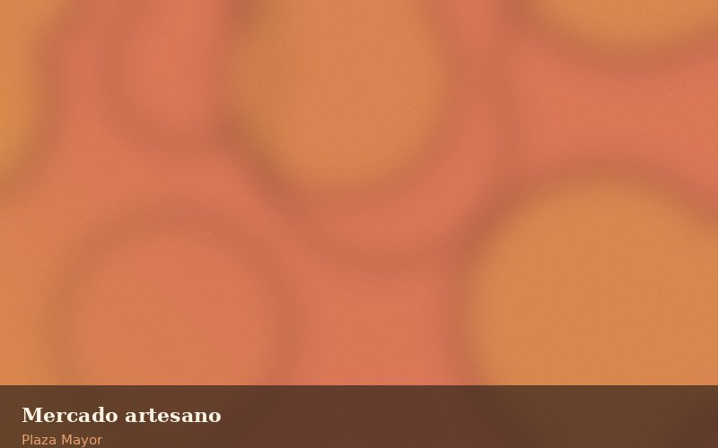

Horarios
De 10:00 a 21:00 los tres dias. Talleres en franjas de mañana y tarde.
Tres dias para descubrir oficios milenarios, conversar con maestras y maestros artesanos, y sumarse a talleres practicos en el corazon de la ciudad.
De 10:00 a 21:00 los tres dias. Talleres en franjas de mañana y tarde.
Casa de Cultura, plaza Mayor. Aparcamiento publico a 200 metros.
Acceso adaptado, sillas de ruedas disponibles y bucle magnetico en sala principal.
Cada jornada se centra en una familia de oficios. Mira el avance del programa y elige por donde quieres empezar.

Alfareria, vidrio soplado y forja. Demostraciones en directo a cargo de cinco talleres locales.

Encajes, tapiz, cesteria y bordado tradicional. Talleres familiares de iniciacion para todas las edades.
Carpinteria fina, talla y canteria. Mesa redonda de cierre con artesanas y artesanos de toda la provincia.

Mas de 30 puestos en la plaza Mayor con piezas unicas hechas a mano. Acceso libre.
Taller permanente para niños de 5 a 12 años. Cada sesion termina con una pieza para llevar a casa.
Conferencias breves, de 30 minutos cada una, sobre el futuro de los oficios y las nuevas generaciones.